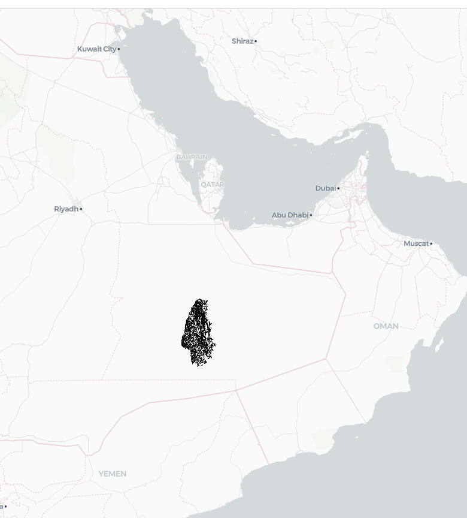
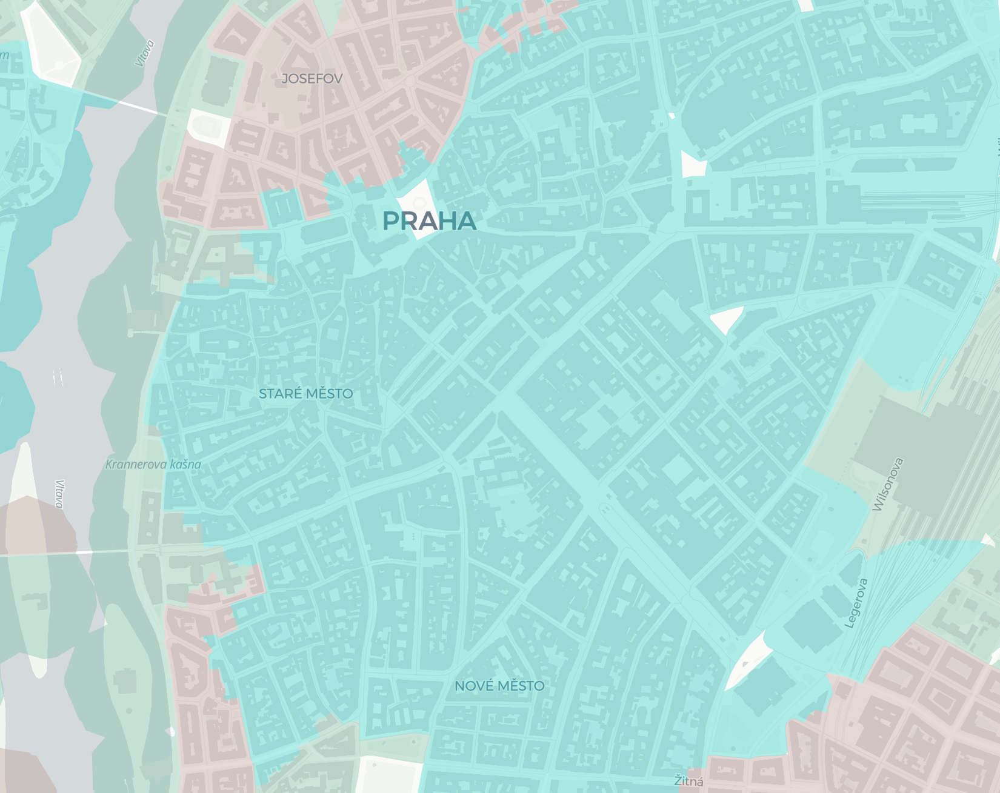

EuroFab Progress Meeting
Eurofab team
2024-10-04
Agenda
- Progress on morphometric components
- Progress on imagery components
- Progress on stakeholder components
- Past and future events
- Administrative appendix (if needed)
Where we are

Key focus
WP 200
Iterative Algorithm Desing
and Data Collection Sprints
WP 200
- Progress on morphometric components
- Progress on imagery components
Each including relevant data collection.
Progress on morphometric components
Morphometric classification homogenisation protocol
Protocol design
- Use morphometric classification of Central Europe from a parallel research project as ground truth data
- Calculate morphometric characters on subpar, but homogenous and widely available data, using enclosed tessellation cells (ETCs) as the base unit of analysis
Protocol design
- Train a supervised model to predict the classification of ETCs directly from the calculated morphometric characters, using the morphometric classification data as a target label
Protocol design
- Test the model on an out of training sample country to validate the approach.
- Possibly Denmark / Italy / Spain
- Calculate morphometric characters
- Directly use the model to classify them into urban fabric types
Input data collection and preprocessing
- Morphometric classification of Central Europe (UPDATE)
- Microsoft Building footprints
- Overture Maps streets
- Implementation
Detailed morphometric classification
- It is based on cadastre building data (NEW) !
- Processed from official APIs for all five countries
- New data has ~11 million more buildings than EUBUCCO
- Quality checks are still pending in some regions
Detailed morphometric classification
- Uses Overture streets, therefore there will be some shared data between the classifications, making the model inference easier
Data issues
Problems with existing datasets - EUBUCCO, etc..

Lots of missing and undocumented processed data
Problems with cadastre data - Germany, Poland, etc..
Wrong and undocumented information - CRS, type, year, rate-limited APIs
Microsoft Building footprints
- Cover a large part of the globe - 1.5 billion building footprints.
- Available for the study region, whereas other sources such as Google footprints are not.
- Homogeneous origin - all footprints are derived using the same model.
Examples
Good coverage, but quality drops some places
Overture Maps streets
- OpenStreetMap data with minimal processing, therefore it has good coverage
- The ground truth morphometric classification uses it
- The street network is simplified, preserving its topology, but removing unnecassary transportation artifacts
Examples
Simplified Overture street network
Current implementation status
- We have implemented a pipeline to process the Microsoft buildings and Overture streets
- We have a scalable pipeline (8 mil and more inputs) to calculate the morphological characters, which will be the input to the EUROFAB model.
Current implementation status
- The core functionality for all of this was made available within open-source packages -
momepy,libpysal,sgeop - Existing draft of technical notes, to be delivered two weeks before the Milestone 1 in December
Model development
Target - Urban taxonomy
- Hierarchical classification of urban fabric
- Allows flexibility in the resolution of the classification to be predicted
- At the moment, tested at a fixed level
Urban Fabric Examples
Medieval, Victorian-era and ‘Large, open’ urban fabrics)
Urban Fabric Examples
Modern, Victorian-era and villas
Urban Fabric Examples
First mode iteration coarse hierarchy cut
Subpar data processing methodology
- Generate core spatial units for the entire study area and calculate morphometric characteristics
- Train model to predict to urban fabric types using the detailed morphology as a ground truth
- Use the model to predict urban fabrics across Central Europe
First model iteration
- Random forest. Next steps will involve gradient boosting trees and then more advanced NNs.
- The goal is to keep the final model as simple, scalable and interpretable as possible.
- Stratified k-fold train/test splits based on spatial contiguity preventing spatial leakage in the test set - accuracy of 0.95 with random sampling vs 0.68 with spatial stratification.
First iteration results

Next steps
- Refine data processing pipeline
- Start iterating on model development.
- Write validation and comparison schemes to examine model results at different scales of the detailed cadastre classification.
Progress on imagery components
AI model design and development
Review: AI model design
- Scale: Pixel vs patch (size)
- Task: Classification vs segmentation
- Model: Network architectures and foundation models
Baseline

Baseline: Results

WP 202: AI model design
Data preprocessing
- 224 x 224 x 3 image tiles
- 26,942 tiles (.tif)
- Labels:
- Spatial signatures (.tif)
- Train/test split: stratified 80/20% (stratified by distribution in dataset)
Train/test
80/20% 

Unbalanced dataset

Example
Model design
Model design
Backbone: foundation models
- Satlas
- Clay
- IBM/NASA (Prithvi)
Comparison of backbones
| Model | Architecture | #Labels | Images |
|---|---|---|---|
| Satlas | SwinT | 302M | Sentinel-2 |
| Clay | MAE/ViT | 70M | Sentinel-2/Landsat/NAIP/LINZ |
| Prithvi | MAE/ViT | 250 PB | Sentinel-2/Landsat |
Loss
- CrossEntropy Loss (“ce”):
- penalizes pixel-wise misclassifications
- Focal Loss (“focal”):
- reduces the contribution of easily classified examples and puts more weight on hard-to-classify pixels.
Validation metric
- IoU (Intersection over Union)
- Overlap between predicted and ground truth segmentations; 0 (no overlap) to 1 (perfect overlap).
- F1 Score (Weighted)
- Balancing precision (how much of the prediction is correct) and recall (how much of the actual segmentation is captured).
Validation metric
- Accuracy (Weighted)
- Percentage of correctly classified pixels.
Model A: Satlas
Model B: Clay

Model C: Prithvi

Results: fine-tuning
| Model | Satlas | Clay | Prithvi |
|---|---|---|---|
| Run time (per epoch) (with GPU) | 9 mins | 8 mins | 20 mins |
| # parameters | 90M | 86M | 120M |
| Implementation | 5/10 | 6/10 | 7/10 |
| Hyperparameter tracking | Own setup | Wandb.ai | Tensorboard |
Results: fine-tuning 10 epochs
| Satlas | Clay | Prithvi | |
|---|---|---|---|
| Accuracy (weighted) | 0.57 | 0.72 | 0.62 |
| IoU (weighted) (0-1) | 0.33 | 0.58 | 0.41 |
| F1 (weighted) | 0.41 | 0.69 | 0.58 |
Without hyperparameter tuning!
Results: fine-tuning w/ focal loss
| Satlas | Clay | Prithvi | |
|---|---|---|---|
| Accuracy (weighted) | 0.25 | 0.72 | 0.59 |
| IoU (weighted) (0-1) | 0.2 | 0.58 | 0.42 |
| F1 (weighted) | 0.21 | 0.69 | 0.59 |
Prithvi: CE vs focal loss
Clay predictions
Summary: model comparison
- Clay is the winner!
- Training loss is important
- Some classes still very much underdetected!
Next steps
- Technical write-up
- Hyperparameter-tuning
- Data augmentation
- Comparison to baseline
- downsample/ upsample
- maps
Progress on stakeholder components
Past and future events
Past
Urbis 24, Frascati
Future
World Urban Forum, Cairo, November 6th @ 15:30
Monitoring urban fabric for data-driven planning and decision-making
What is next
- Milestone 1 (6 months)